Seurat中如何让细胞听你指挥
原文：https://mp.weixin.qq.com/s?__biz=MzAwMzIzOTk5OQ==&mid=2247495938&idx=1&sn=2258390c97ec14f3cd336defede59cdb&chksm=9b3c8852ac4b01448fd3b84463d5ab6b697495db6ad57746e7f60e32f491547a3e35290c66ee#rd 合集：单细胞教程全收录 / 答读者问

写在前面
 这一讲其实我们更过，这里重置了一下，大家可以配合这一讲一起学习(答读者问 （十四）Seurat中分类变量处理技巧)。付费解锁里没内容啦，所有内容都放出来了。只需要这讲的同学不要订阅，本推送是个“假的付费内容”。
这一讲其实我们更过，这里重置了一下，大家可以配合这一讲一起学习(答读者问 （十四）Seurat中分类变量处理技巧)。付费解锁里没内容啦，所有内容都放出来了。只需要这讲的同学不要订阅，本推送是个“假的付费内容”。
开整
一、提取或删除细胞
# 先准备下数据
library(Seurat)
## Attaching SeuratObject
## Attaching sp
pbmc <- readRDS('pbmc.rds')
DimPlot(pbmc)
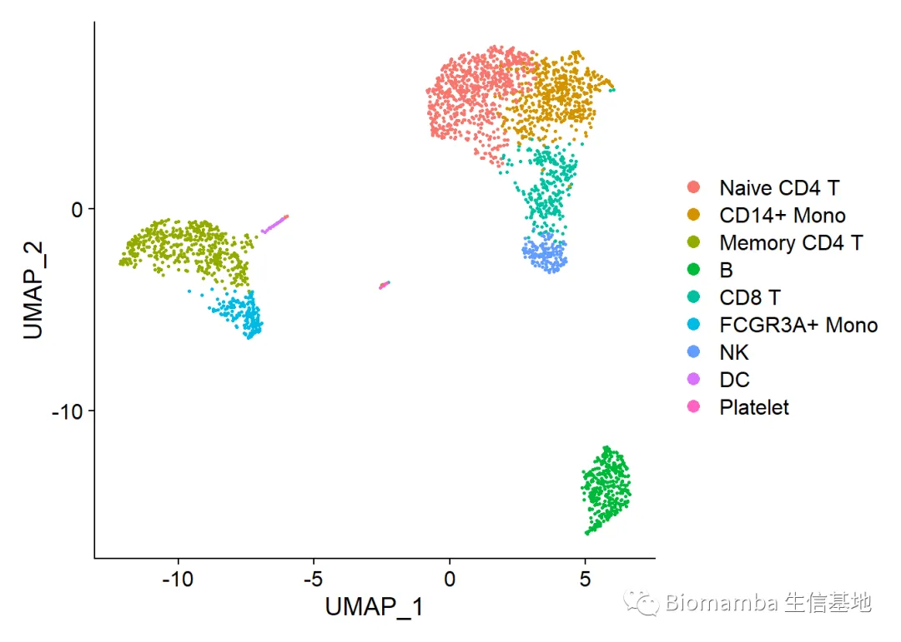
1.1 提取细胞
假设我对这次对象中的所欲T cell比较感兴趣，想从中取出单独研究
alltcell <- subset(pbmc,idents=c('Naive CD4 T','Memory CD4 T','CD8 T'))
DimPlot(alltcell)
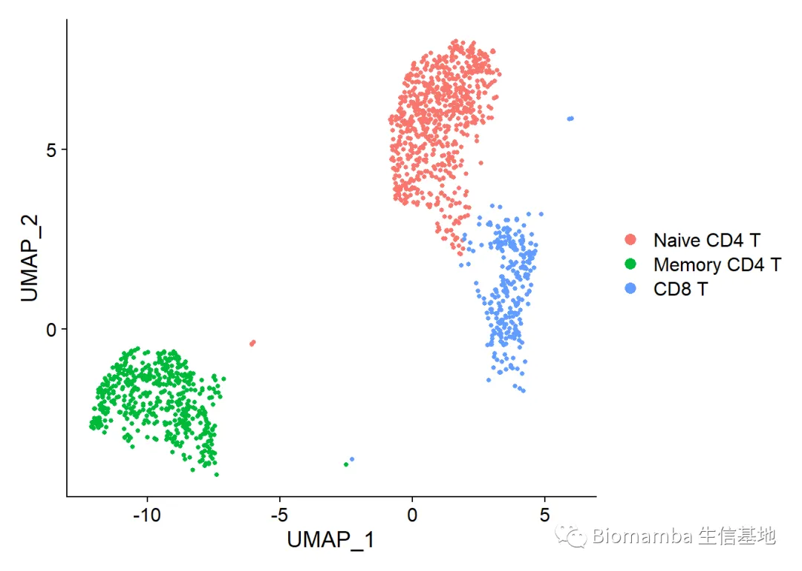
1.2 删除细胞
亦或我不想要B细胞，那最简便的方式便是“取反”
deletebcell <- subset(pbmc,
idents = unique(Idents(pbmc))[!unique(Idents(pbmc))=='B']
)
DimPlot(deletebcell)#B cell确实没了
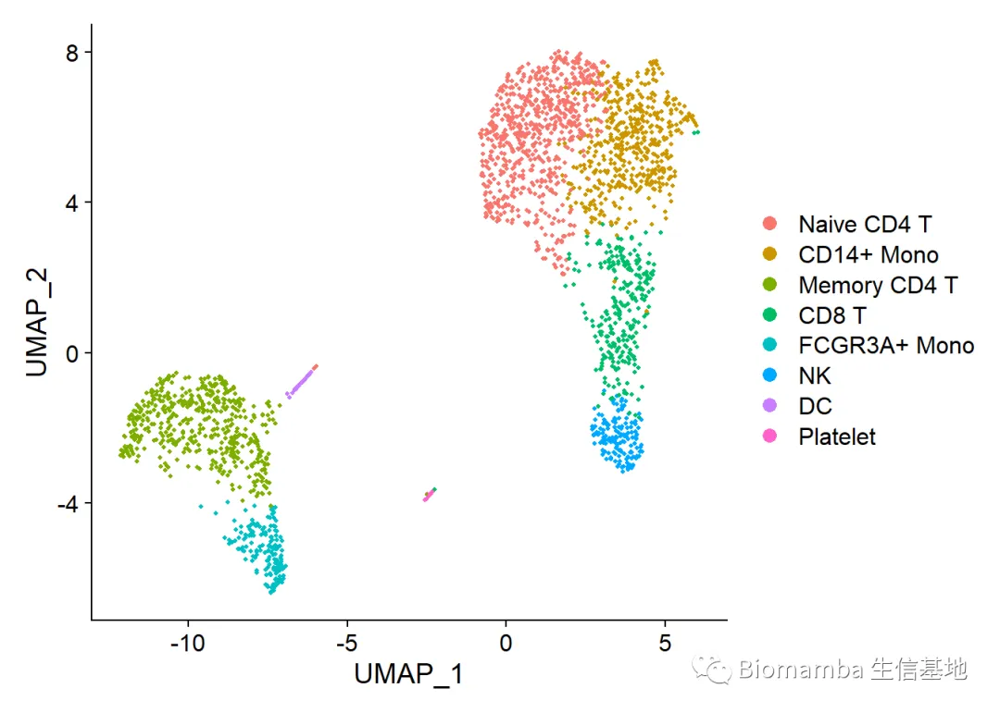
1.3 删除多个细胞
deleteb.and.t <- subset(pbmc,
idents = unique(Idents(pbmc))[!unique(Idents(pbmc)) %in% c('B','Naive CD4 T','Memory CD4 T','CD8 T')]
)#%in%不懂什么意思的可以百度一下，虽然为大家在数据分析方面提供了详细的讲解，但是R语言这一块还是得靠大家自己学习
DimPlot(deleteb.and.t)#B cell和T cell都没了
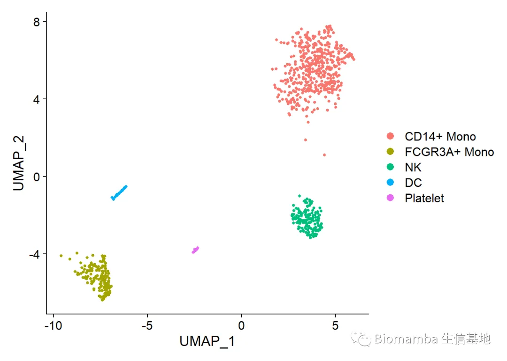
二、让细胞听你指挥
之前有读者问，我的细胞数量不多，或者亚群之间差别不大，如何通过单基因的表达量取筛选一定的细胞。不知道大家还记不记得我们单样本分析的这条命令pbmc <- subset(pbmc, subset = nFeature_RNA > 200 & nFeature_RNA < 2500 & percent.mt < 5)
没错，这道题的答案其实你早就已经知道
Idents(alltcell) <- 'T Cell'#假设我们不知道这群T Cell的亚群
DimPlot(alltcell)
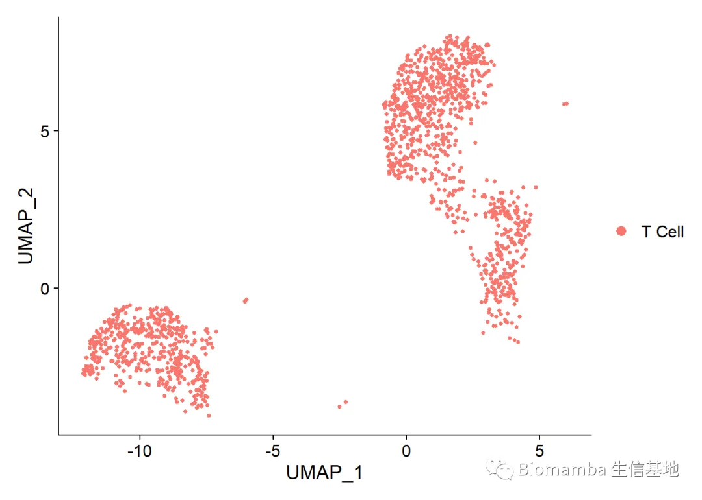
### 如果，这时我的细胞数量已经不能支持我继续进行亚群分析，但我仍想从这群T Cell中分离出CD8 TCELL
FeaturePlot(alltcell,features = 'CD8A')#先看一下 CD8A的表达量
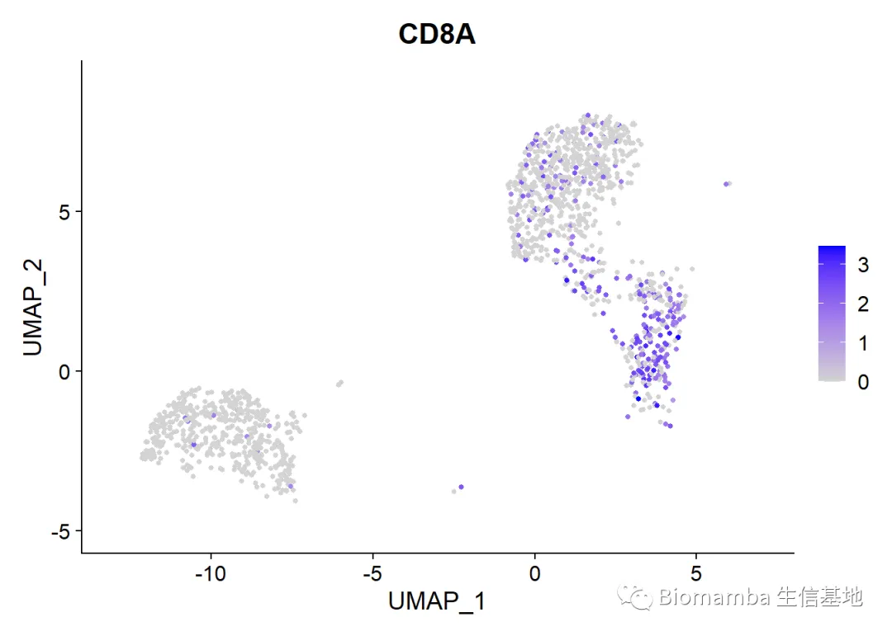
cd8tcell <- subset(alltcell,CD8A>0)
Idents(cd8tcell) <- 'CD8 TCELL'
DimPlot(cd8tcell)
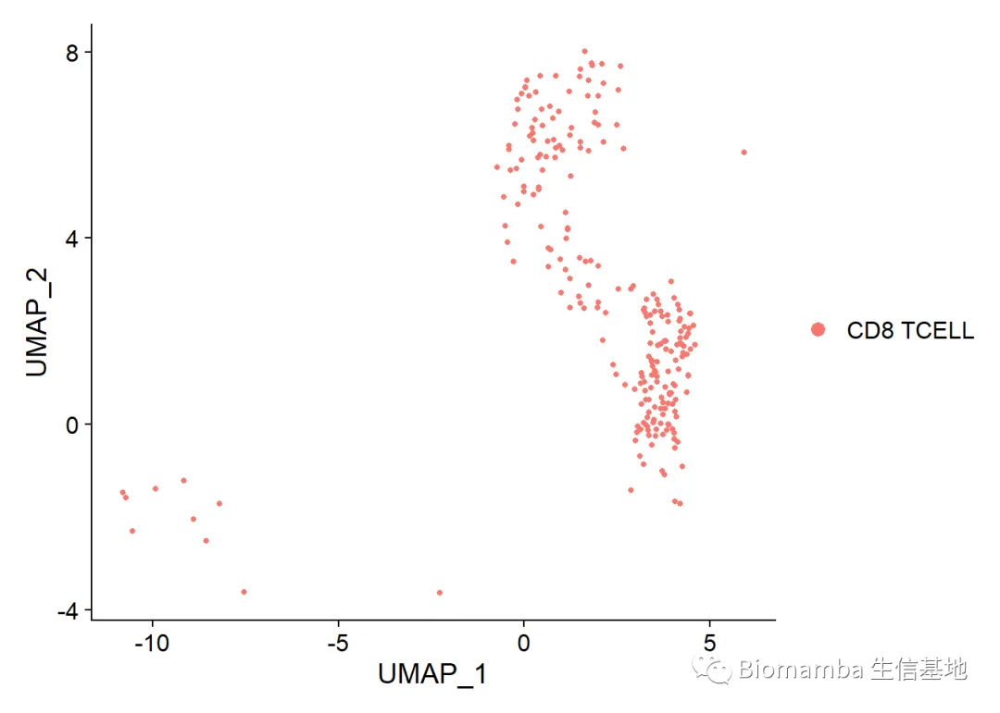
2.1 三等分
又或者，CD8A这一基因对这类细胞的某些生物学特征具有相关性，我需要按照这一基因的表达量将T Cell划分为高、中、低三个组，这一思路在TCGA数据挖掘中十分常见
ncol(alltcell)#果然，一共有1448个细胞
## [1] 1448
#那我们就想办法把这1448个细胞按CD8A的表达量三等分一下
one.third <- ceiling(ncol(alltcell)/3)
one.third#有些同学用自己的数据就敲不好了，如何四等分应该不用多说了吧
## [1] 483
newmeta <- as.data.frame(
cbind(names(sort(alltcell@assays$RNA@counts['CD8A',],
decreasing =T)),
c(rep('high',one.third),
rep('mid',ncol(alltcell)-(one.third*2)),
rep('low',one.third))#大致三等分一下
)
)
colnames(newmeta)[1]<-'Cell'
colnames(newmeta)[2]<-'My.CD8A.Expr'
rownames(newmeta)<- newmeta[,1]
head(newmeta)#看一下数据结构
## Cell My.CD8A.Expr
## GATCCCTGTGTAGC-1 GATCCCTGTGTAGC-1 high
## ACTATCACCTTGGA-1 ACTATCACCTTGGA-1 high
## AGTACTCTCAACCA-1 AGTACTCTCAACCA-1 high
## CTTGATTGAGGTTC-1 CTTGATTGAGGTTC-1 high
## GGTAAAGAGCTAAC-1 GGTAAAGAGCTAAC-1 high
## TTCGTATGGATAGA-1 TTCGTATGGATAGA-1 high
alltcell<-AddMetaData(alltcell,metadata = newmeta[,2],col.name = 'My.CD8A.Expr')
#把这个注释加回到seurat对象之中
Idents(alltcell)<- 'My.CD8A.Expr'
p1 <- VlnPlot(alltcell,features = 'CD8A')
p1
#这个数据根据CD8A表达量划分的前1/3与后1/3似乎差别不大
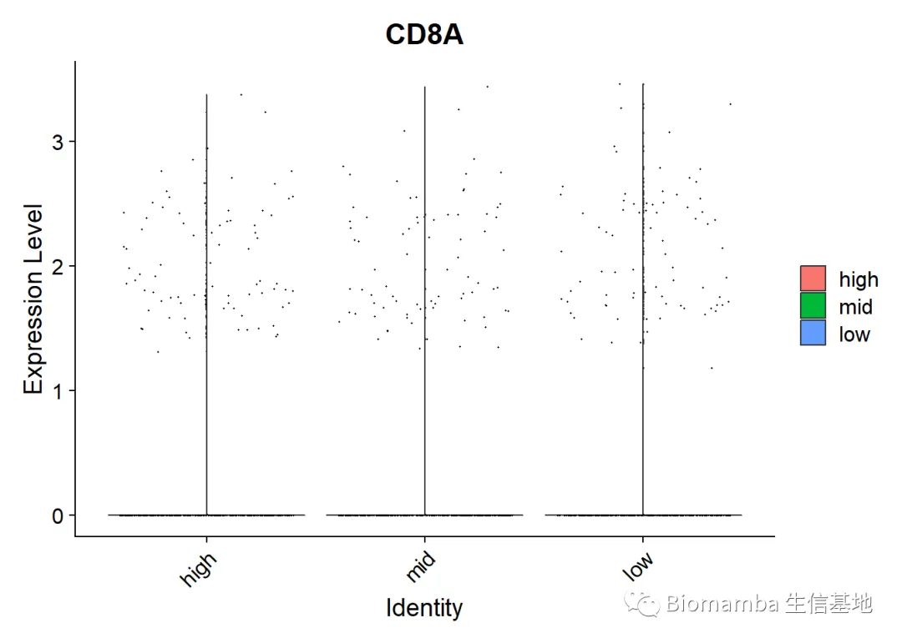
2.2 取前后10%
one.tenth <- ceiling(ncol(alltcell)/10)
newmeta <- as.data.frame(
cbind(names(sort(alltcell@assays$RNA@counts['CD8A',],
decreasing =T)),
c(rep('high',one.tenth),
rep('mid',ncol(alltcell)-(one.tenth*2)),
rep('low',one.tenth))#那么三部分的比例是1:8：1
)
)
colnames(newmeta)[1]<-'Cell'
colnames(newmeta)[2]<-'My.CD8A.Expr'
rownames(newmeta)<- newmeta[,1]
head(newmeta)#看一下数据结构
## Cell My.CD8A.Expr
## GATCCCTGTGTAGC-1 GATCCCTGTGTAGC-1 high
## ACTATCACCTTGGA-1 ACTATCACCTTGGA-1 high
## AGTACTCTCAACCA-1 AGTACTCTCAACCA-1 high
## CTTGATTGAGGTTC-1 CTTGATTGAGGTTC-1 high
## GGTAAAGAGCTAAC-1 GGTAAAGAGCTAAC-1 high
## TTCGTATGGATAGA-1 TTCGTATGGATAGA-1 high
alltcell<-AddMetaData(alltcell,metadata = newmeta)
#把这个注释加回到seurat对象之中
Idents(alltcell)<- 'My.CD8A.Expr'
p2 <- VlnPlot(alltcell,features = 'CD8A')
p2
#成功，前10%表达量果然更高
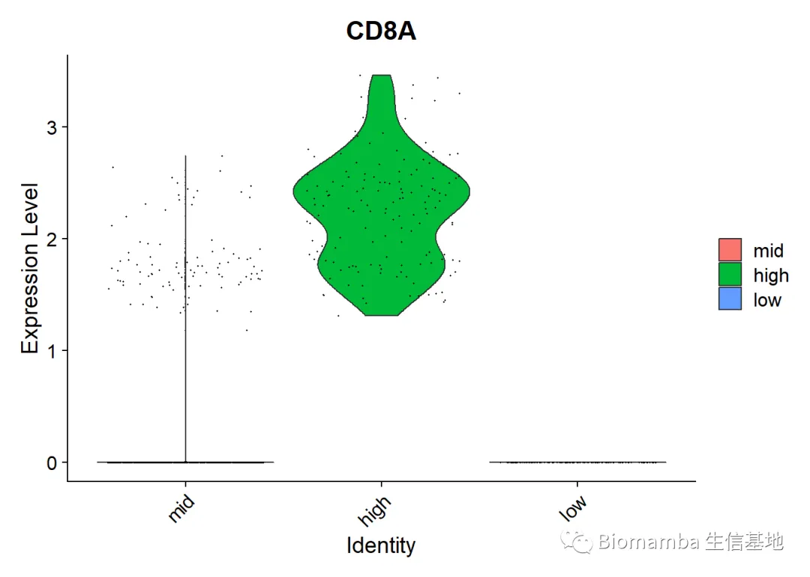
#对比一下1/3和1/10的差别：
library(patchwork)
p1|p2
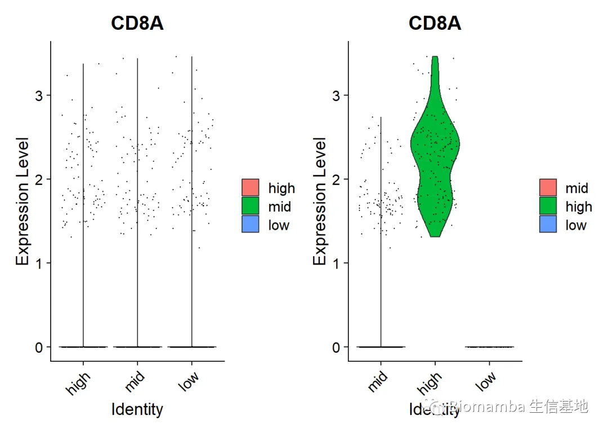
2.3 画个箱线图再看看
library(dplyr)
##
## 载入程辑包：'dplyr'
## The following objects are masked from 'package:stats':
##
## filter, lag
## The following objects are masked from 'package:base':
##
## intersect, setdiff, setequal, union
Idents(alltcell) <- colnames(alltcell)
mymatrix <- log1p(AverageExpression(alltcell, verbose = FALSE)$RNA)
mymatrix2<-t(mymatrix)%>%as.data.frame()
mymatrix2[,1]<-alltcell$My.CD8A.Expr
colnames(mymatrix2)[1] <- "My.CD8A.Expr"
library(ggplot2)
## Warning: 程辑包'ggplot2'是用R版本4.2.2 来建造的
p3<- ggplot2::ggplot(mymatrix2,aes(x=My.CD8A.Expr,y=CD8A,fill=My.CD8A.Expr))+
geom_boxplot(alpha=0.7)+
scale_y_continuous(name = "Expression")+
scale_x_discrete(name="My.CD8A.Expr")+
scale_fill_manual(values = c('DeepSkyBlue','Orange','pink'))
p3
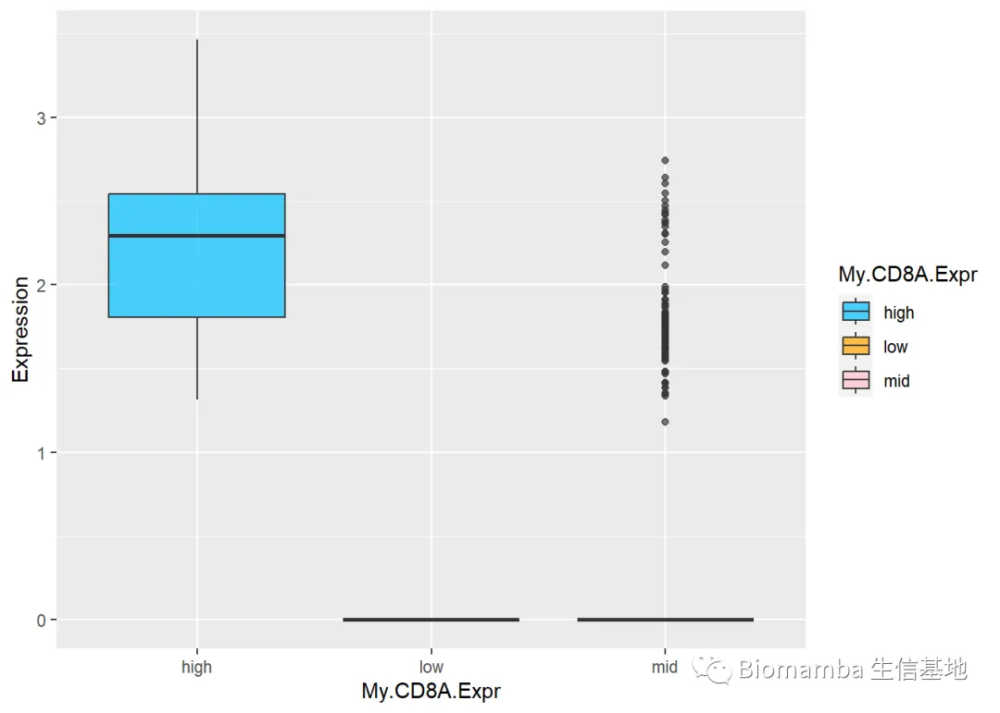
2.4 条条大路通罗马，再换种思路
#只看表达CD8A和不表达CD8A的细胞
alltcell$cd8.expr <- rep('low',ncol(alltcell))
cd8tcell <- subset(alltcell,CD8A>0)#这次我们取表达CD8A的细胞
alltcell$cd8.expr[names(alltcell$cd8.expr) %in% colnames(cd8tcell)]<-'high'
Idents(alltcell) <- 'cd8.expr'#这样表达CD8A的细胞就为high，不表达的就为low
p4 <- VlnPlot(alltcell,features = 'CD8A')
p4
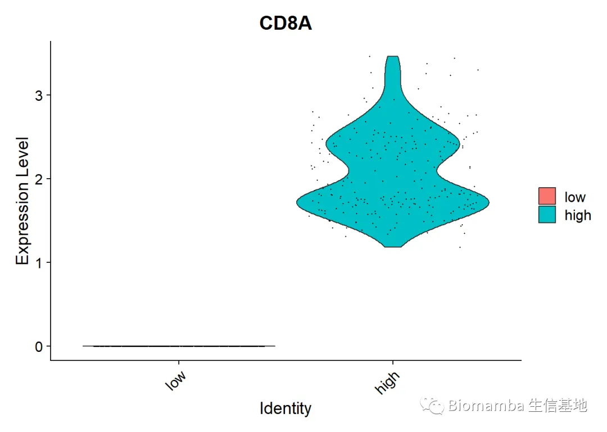
diff.expr <- FindMarkers(alltcell,ident.1 = 'high',ident.2 = 'low')
### 那让我们看看，CD8A高表达细胞和CD8A低表达细胞之间有什么差异基因吧
head(diff.expr)
## p_val avg_log2FC pct.1 pct.2 p_val_adj
## CD8A 0.000000e+00 3.173061 1.000 0.000 0.000000e+00
## CD8B 2.354188e-92 2.092194 0.636 0.088 3.228533e-88
## CCL5 5.762508e-56 2.336522 0.699 0.246 7.902704e-52
## CTSW 7.369501e-52 1.419502 0.699 0.232 1.010653e-47
## CST7 8.202767e-52 1.788091 0.531 0.122 1.124928e-47
## NKG7 1.108273e-44 2.193258 0.640 0.243 1.519886e-40
数据处理就是这样，总要不断尝试不同的分析思路，我每次的中间过程、报错都会留在最后发布的推送之中，为的就是让大家能跟着真实的数据分析过程一起学习，坚持看完、练完、一定会有收获的哦
最后、如果以上内容对你有帮助
欢迎在文章的Acknowledgement中加上这一段：
Hide
Since Biomamba and his wechat public account team produce bioinformatics tutorials and share code with annotation, we thank Biomamba for their guidance in bioinformatics and data analysis for the current study.
代码及测试文件
不要再说我的链接失效啦，我也不知道为啥腾讯和百度云不对付，微信页面或腾讯浏览器时常打不开百度云链接，链接最好在谷歌浏览器中打开或扫码打开 ，真的失效了再提醒客服更换链接哦。也不要说我的链接里没代码，html格式的文件大家用浏览器打开就可以看到整理好的笔记：
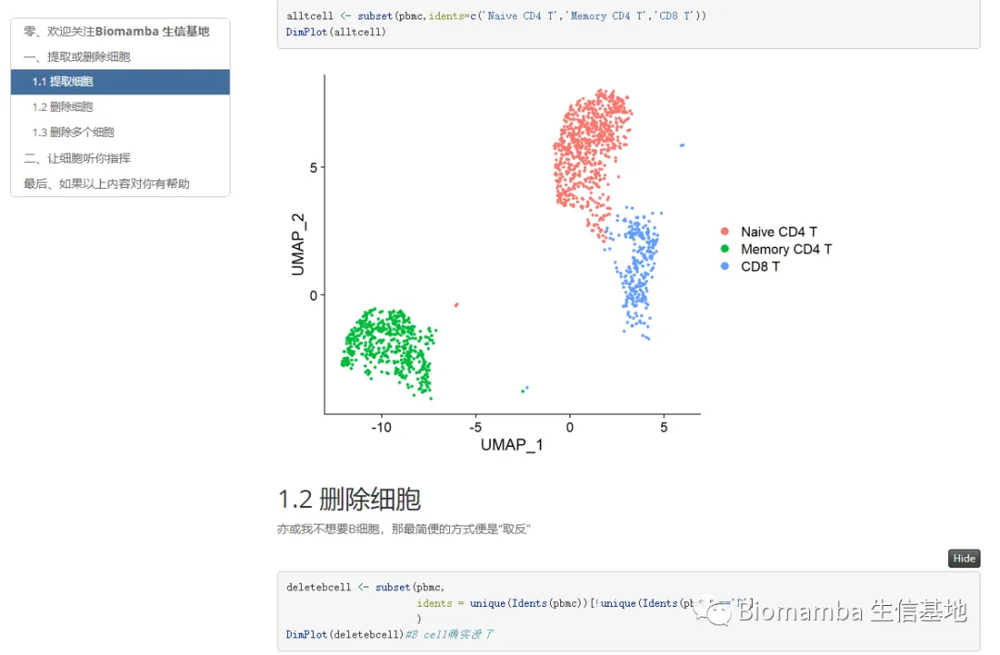
链接：
https://pan.baidu.com/s/1uH_Ft0qYB5xKzzULO0oDKA?pwd=bir2
若链接失效可以文末联系客服领取~
单细胞系列教程目录
单细胞数据分析系列教程：
B站视频，先看一遍视频再去看推送操作，建议至少看三遍：https://www.bilibili.com/video/BV1S44y1b76Z/以下的资料都可以在这里订阅：单细胞数据基础分析学习手册
单细胞测序基础数据分析保姆级教程，代码部分整理在往期推送之中：手把手教你做单细胞测序数据分析（一）——绪论 手把手教你做单细胞测序数据分析（二）——各类输入文件读取 手把手教你做单细胞测序数据分析（三）——单样本分析 手把手教你做单细胞测序数据分析（四）——多样本整合手把手教你做单细胞测序数据分析（五）——细胞类型注释 手把手教你做单细胞测序数据分析（六）——组间差异分析及可视化手把手教你做单细胞测序数据分析（七）——基因集富集分析
上游fastq文件处理： 单细胞分析的最上游——处理Fastq文件：cellranger 单细胞分析的最上游——处理Fastq文件：dropseqRunner有奖提问,这个smart-Seq2数据实战的比对率为何如此低？
细胞通讯B站连续播放起来比较方便： https://www.bilibili.com/video/BV1Ab4y1W7qx?p=1往期推送单细胞测序数据进阶分析—《细胞通讯》1.概论 单细胞测序数据进阶分析—《细胞通讯》2.1CellChat基础分析教程 单细胞测序数据进阶分析—《细胞通讯》2.2CellChat多组别分析 给你们申请到了免费的128GB云服务器 拟时序分析B站连续播放起来比较方便： https://www.bilibili.com/video/BV1br4y1x7Hf?p=1往期推送单细胞测序数据进阶分析—《拟时序分析》1.概论 单细胞测序数据进阶分析—《拟时序分析》2.monocle概论单细胞测序数据进阶分析—《拟时序分析》3.monocle2实操：完整版 单细胞测序数据进阶分析—《拟时序分析》4.初识monocle3 单细胞测序数据进阶分析—《拟时序分析》5.monocle3的降维、分群、聚类单细胞测序数据进阶分析—《拟时序分析》6.monocle3的拟时序分析 解决monocle2的orderCells报错的两种方法 一文搞定拟时序分析的下游可视化探索
其他单细胞相关技术贴也在这里：细胞的数量由誰决定？单细胞中应该如何做GSVA？答读者问（三）：单细胞测序前景答读者问（四）：如何分析细胞亚群答读者问（六）：Seurat中如何让细胞听你指挥答读者问（八）：为什么Read10X也会报错? 答读者问（十）整合后的表达矩阵，如何拆分出分组信息？ 答读者问（十一）如何一次性读取一个目录下的cellranger输出文件？ 给你安排一个懂生信的工具人（十）：不学编程 零代码完成单细胞测序数据分析：Loupe Browser 什么？不做单细胞也能分析细胞类群和免疫浸润？ 答读者问 （十三）查看Seurat对象时的ERROR：type='text' 各类单细胞对象（数据格式）转换大全（一）批量整理好GEO中下载的单细胞数据 答读者问 （十四）Seurat中分类变量处理技巧 答读者问 （十五）稀疏矩阵转matrix, as.matrix函数是下下策 答读者问 （十六）做单细胞测序到底需要多少内存答读者问 （十七）调用的线程越多就算的越快嘛? 答读者问（十八）、一个我至少被问过30遍的monocle报错沉浸式统计细胞比例没有barcode文件的单细胞数据要怎么读取 单细胞基因集评分之AUCell 粉丝来稿|1. Seurat4相较于Seurat3的几点改动 如何加快Seurat的计算速度 一文搞定单细胞基因集评分答读者问（二十）四个单细胞样本只给了一套文件怎么读 人类单细胞测序数据中有哪些以"**-"开头的基因 为什么总把分辨率调的很高
单细胞文献阅读：Biomamba助推的第二篇文章!发表了！又来了！Biomamba生信基地助推的第四篇文章! 文献阅读（三）、单细胞测序解析糖尿病肾病中肾小球的动态变化 文献阅读（四）、单细胞测序技术解析健康人与T2D患者的胰岛差异文献阅读（六）、小鼠全肾单细胞测序开篇之作文献阅读（七）、一篇不花钱就能白嫖的文章文献阅读（八）、不会吧不会吧，Nature都能白嫖？文献阅读（十一）、高氧下小鼠肺发育损伤的ScRNA图谱文献阅读（十二）、IgAN & STRT-Seq 文献阅读（十三）、老树开新花——EGFR、肿瘤、免疫+scRNA-Seq 文献阅读（十五）、癌前基质细胞驱动BRCA1肿瘤发生文献阅读（十八）、紧跟生信"钱"沿,胰腺癌&免疫多模态图谱 文献阅读（十九）、原发头颈癌和肿瘤转移微生态 文献阅读（二十一）、肾脏疾病&代谢&核受体ESRRA文献阅读(二十二)、PD-1&急性髓细胞性白血病&T Cell 文献阅读（二十三）、鼻咽癌&肿瘤微环境&scRNA-Seq文献阅读 (二十四)、《Nature》：MYB调控衰竭性T细胞对检查点抑制的响应文献阅读(二十八)、单细胞都能活检测序了？文献阅读(二十九)、单细胞测序做到什么程度能毕业|硕士篇 文献阅读(三十)、单细胞测序做到什么程度能毕业|博士篇2022年了，都有哪些器官/组织有scRNA-Seq数据|小鼠篇 2022年了，都有哪些器官/组织有scRNA-Seq数据|人类篇
单细胞注释复写单细胞注释复写(一):Human Fetal Kidney单细胞注释复写(二): human colorectal
非技术帖：关于单细胞的事 谈谈后面的计划趁机预告一波生信分析为什么要使用服务器？ 为实验室准备一份生物信息学不动产

如何联系我们
 公众号后台消息更新不及时，超过48h便不允许回复消息，这里留一下领取资料、免费服务器的微信号 ，方便各位随时交流、提建议（由助理接待）。此外呼声一直很高的交流群也建好了，欢迎大家入群讨论：永久免费的千人生信、科研交流群
公众号后台消息更新不及时，超过48h便不允许回复消息，这里留一下领取资料、免费服务器的微信号 ，方便各位随时交流、提建议（由助理接待）。此外呼声一直很高的交流群也建好了，欢迎大家入群讨论：永久免费的千人生信、科研交流群
大家可以阅读完这几篇之后添加给生信入门初学者的小贴士
如何搜索公众号过往发布内容

 您点的每个赞和在看，我都认真当成了喜欢
您点的每个赞和在看，我都认真当成了喜欢